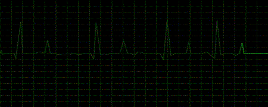
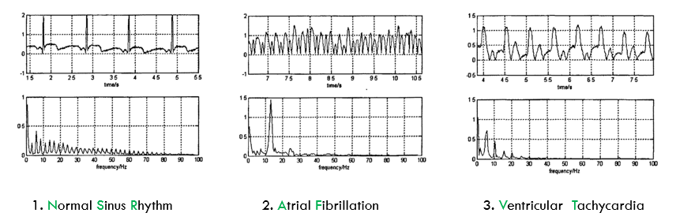
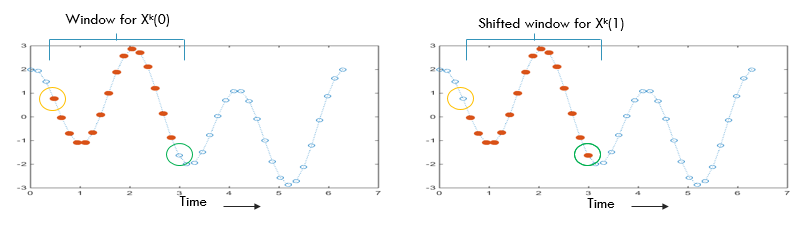
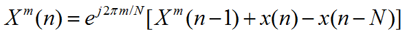
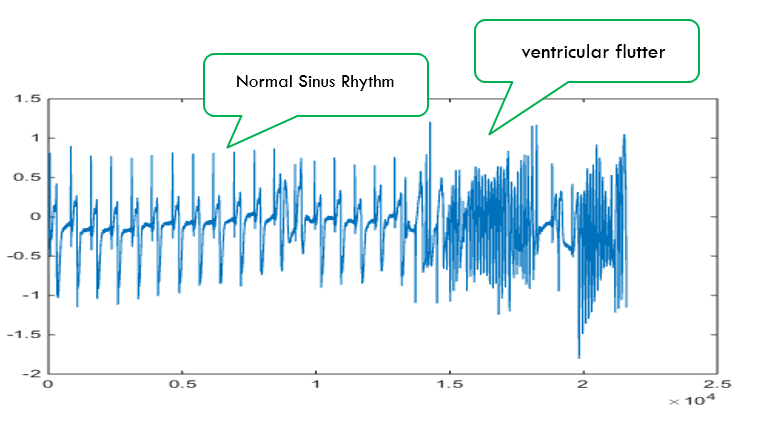
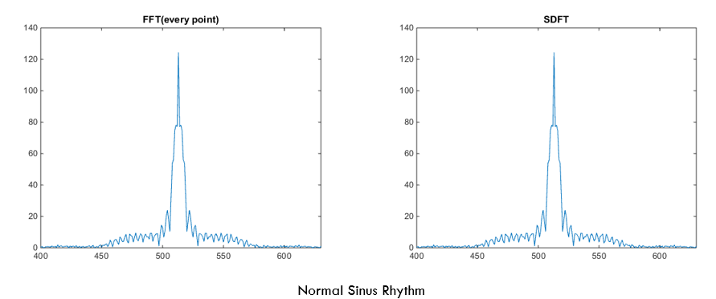
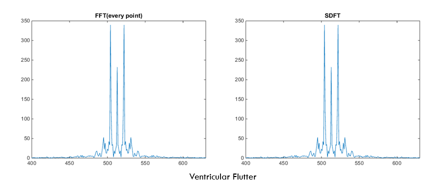

滑动DFT（SDFT）在频域心电图中的应用
SDFT的简介
想必大家对心电图都不陌生，拿到一张心电图，一个有丰富经验的医生可以判断出病人当前的心脏活动状态，但是，对于我们这样的普通人而言，从心电图所能获得的唯一信息只有一个：这个人活着还是死了。

为了减轻医生的负担，也为了让普通人也可以看懂心电图，频域心电图应运而成。下面是三种不同的心脏活动的时域图：第一个是正常窦性心律，也就是正常人的心跳，第二种是心室纤颤，第三种是心动过速。下面三张图是这三种心脏活动对应的频谱图，可以看出不同心脏活动的频域图区分还是很明显的，所以仪器可以通过频谱自动判别当前病人心脏活动状态。

心电图的时域信号是源源不断的输入进来的，可以认为是一个无限长的序列，为了求无限长序列的频谱，我们需要先对信号进行分段，然后再做傅里叶变换。常规方法主要有两种：
- 第一种方法是我们每收到一个新的采样点就重新计算一次傅里叶变换，这样可以保证频谱图实时更新，但是这样做计算量过大，仪器成本要上升。
- 第二种方法是：我们做完上一次的傅里叶变换之后，进行等待，直到后面接收到的采样点个数等于设定傅里叶变换点数的时候再进行频谱计算，这样虽然降低了计算量，但是却无法满足实时性的要求。在仪器等待采样点的这段时间里，心电图的频谱是不变化的，所以频谱数据的实时性更新还是很重要的。
那到底有没有一种离散傅里叶算法既可以减小计算量又可以满足实时性要求呢？
当然有，那就是我今天想向大家介绍的令一种离散傅里叶变换方法：滑动DFT。

我们再来看这两张图，当前时刻时域上的序列与前一时刻的序列大部分采样点都是相同的，唯一不同的就是序列的首尾两个采样点。既然时域上序列很相似，频率上肯定也有一定的关联，如果找到这两种序列在频域上的联系，那我们就可以借助于前一时刻的频谱信息推断出当前时刻的频谱信息。
滑动DFT算法给出了我们两者频域上的联系：

X(n-1)代表前一时刻16点序列的频谱，m是频谱值的索引。同理，X(n)代表当前时刻16点序列的频谱，X(n)是新加入的采样点时域上的值，x(n-N)代表去掉的前面的采样点的值。
整个公式的意义是：当前时刻序列的频谱任意一点的值等于上一时刻序列频谱对应点的值加上新采样点的值减去去掉的采样点的值，然后进行一个相移。
通过以上SDFT递推公式我们就可以根据上一时刻的频谱图计算当前时刻的频谱图，相比于fft方法节省了计算量。
SDFT的仿真
麻省理工学院的Mit-BIH数据库为世界公认的最权威的心率失常的数据库，我们从数据库中下载一段时常一分钟的心电图信号，其中信号前半部分为正常窦性心律，后半部分为心室扑动。然后通过FFT和SDFT两种方法对心电图信号进行傅里叶变换，下图为时域上的心电图信号：

Matlab仿真代码如下：
1 | %=======正式仿真从此处开始============================= |
仿真结果如下：
正常窦性心律的频谱图：

心室扑动的频谱图：

SDFT的缺陷
- 相比于FFT，SDFT所需的存储空间更大，因为需要空间存储上一时刻的频谱和上一时刻的时域采样点。
- 在仿真中我们还发现，SDFT会积累误差，因为当前时刻频谱计算依赖于上一时刻的频谱，因为硬件的数值位数总是有限的，每次运算的结果都是近似值，虽然这个近似值与真实值之间误差很小，但经过无数次迭代，这个误差会不断增长，而FFT不会有这个问题。